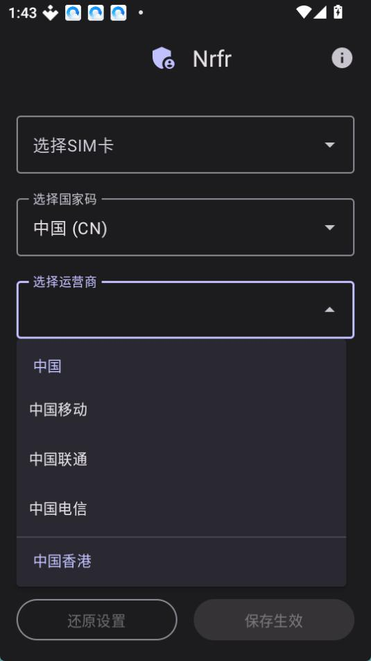

Nrfr 上手实战：从零改 SIM 国家码，一次就能跑通
Nrfr 是一款通过 Shizuku 权限修改安卓手机 SIM 国家码的小工具，本文带你从零完成安装、授权、改码到验证全流程，附双卡配置和常见翻车点解法。
读完这篇，你就能用 Nrfr 把手机 SIM 的国家码改成任意支持的地区，让那些按卡归属地判断的海外应用正常联网。整个流程大约十五分钟，中间需要电脑一台配合 Shizuku 完成授权。
开工前准备
先把环境对齐，不齐的直接跳坑——Nrfr 本身只有几 MB，对手机配置几乎没门槛，但权限和版本这两条是硬线。
手机端条件： Android 8 及以上、开发者选项已开、USB 调试已开、存储空间够用（APK 连 Shizuku 加起来不到二十 MB）。小米或红米用户注意把通知样式改成原生样式，不然 Shizuku 配对会卡住。
电脑端条件： Windows 电脑一台、能传数据的数据线（别拿纯充电线，插上只充电不识别设备）。
还有一个前置动作：必须先装 Shizuku。Nrfr 没有 root 权限，它获取系统 SIM 层读写能力的唯一通道就是 Shizuku，没装的话 Nrfr 打开就是一张提示页，直接让你去装 Shizuku。这步绕不开，是整个流程里最容易出问题的环节。

第一步：装 Shizuku 并完成授权
Shizuku 的安装不难，难在配对和启动。整个过程走一遍就明白了，别慌，跟着下面走。
- 手机上装 Shizuku 应用，从正规渠道下载就行。
- 打开 Shizuku，点「开发者选项」入口，里面有一串配对码和二维码。
- 用数据线把手机连电脑，电脑上执行
adb devices确认设备在线。 - 在 Shizuku 的电脑端命令行里输入配对指令，把手机上显示的配对码敲进去，完成配对。
- 配对成功后点「启动」，Shizuku 就开始跑起来了。
启动之后别关 Shizuku，保持在后台挂着——Nrfr 需要它一直存活。这步如果配对失败或者启动后立刻崩，九成是数据线不对或者 USB 调试没授权，先排查这俩。
第二步：装 Nrfr 本体
从官方下载拿到 APK，手机侧安装完成后打开。正常情况下你会看到主界面，列出当前卡槽里的 SIM 卡。如果看到的是「需要 Shizuku 权限」提示页，说明 Shizuku 那边没启动成功，回去重试第一步。

第三步：选卡 + 选国家码 + 选运营商
这三栏是改码的核心逻辑。国家码决定外部世界把这张卡当成哪个国家的卡，运营商决定系统按哪套配置参数对待它——想深入研究各参数怎么配的话，可以去看Nrfr文档。选码的依据很简单：你要解决什么问题，就去看目标应用要求什么地区。比如某个海外短视频应用支持美国地区，那国家码就选 US，别乱拍脑袋选个 JP 然后发现还是不行。
点进要改的那张卡，下拉国家码列表，找到你要的地区，再往下拉运营商。运营商一栏如果不知道选谁，就选该国家下的通用/顶层选项就行，不必纠结。
双卡用户注意：两张卡都要改。应用的归属地检测可能读卡槽 1，也可能读卡槽 2，甚至读当前数据卡——只改一张，另一张的原始归属地还在那里等着，被检测到就前功尽弃。两张卡改成同一个码最省心，除非你有明确理由想让两张卡呈现不同地区。
第四步：保存生效 + 验证
三栏都填完了，点保存。Nrfr 会把修改写进系统的 SIM 配置层，这个过程很快。保存之后别立刻去重启手机，先打开设置里的 SIM 卡详情页看一眼「国家码」字段是不是已经变了——这是最直观的验证方式。也可以打开目标应用直接试，能正常联网说明改码生效了。
三个最容易翻车的卡点
卡点一：Shizuku 配对一直失败
八成是数据线的问题。纯充电线传不了数据，换一根能连电脑传文件的线再试。其次检查手机的 USB 调试授权弹窗有没有点「允许」，没点的话电脑根本看不到设备。
卡点二：双卡只改了一张，应用还是检测到中国卡
记住一句话——双卡手机两张卡都要改。检测逻辑是随机读哪张的，你改了卡槽 1，它就读卡槽 2；改了 2，它就读 1。别偷懒，跑两遍第三步。
卡点三：小米/红米机型 Shizuku 启动即崩
这是 MIUI 通知样式限制。把系统通知样式从 MIUI 原生通知改成 Android 原生样式，重启 Shizuku 就正常了。这个坑社区里踩过的人不少，提前改掉省好几十分钟。
改完之后日常用着怎么样
改的是地区呈现不是网络本身，通话和上网一般不受影响。但运营商的一些地区特有服务可能会根据新的国家码表现不同，这个属于正常现象。用完之后想还原，把国家码改回原来的 CN 就行，Nrfr 留着原值的入口。
版本迭代这块，v1.0.3 起多了自定义运营商名称的功能，不想显示系统默认运营商名的可以试试。整体来看 Nrfr 是个定位清晰的小工具——就管改 SIM 国家码这一件事，做透了，没有多余功能。
Shizuku 授权成功的那一刻，后面的操作基本就是点下拉框选选项，没有复杂的命令或者 root 步骤。把环境对齐、别漏改双卡、避开小米的通知样式坑，剩下的就是点几下的事。想继续折腾可以试试配合海外 SIM 卡用，或者研究一下不同国家码对漫游配置的影响。